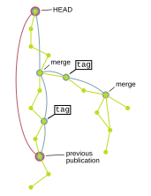

Select something to publish!
You are about to publish in: KOPS


- "Publish full history" will publish the entire history of a branch as-is. This is the most useful format for others to continue working with your project, and thus the recommended option. Note that this will publish the entire project history of the selected branch, including anything you might have excluded on previous publications. This is the only option that retains the commit IDs, keeping your work fully replicable.
- "Publish abbreviated history"
will publish only the significant points (tags & merges)
of a branch's history. Only merge commits and
commits that have been tagged with git tag
will be retained in the abbreviated history,
as well as the HEAD revision of the branch.
This option will change the commit IDs,
reducing the replicability of your work,
but mention the original commit ID in the commit message.
The full history will be archived non-publicly.
This is the recommended option
if your development process is so shoddy that you are ashamed of itif you need to hide parts of your development process. - "Publish latest version only" will publish only the HEAD revision of the branch. If you have previously archived this project, the previously published version(s) will be listed as previous commit(s). This option will change the commit ID, but mention the original commit ID in the commit message. The full history will be archived non-publicly. This option is not recommended unless you don't have any other options.
- "Private access, public record" will non-publicly archive the full history of a branch. A public bibliographical record will be created for the archival record. This is suitable for data that you want to (or have to) keep private.
- "Private access, no record" will not publish anything (obviously), but will non-publicly archive the full history of a branch. The existence of the archived data will not be publicly disclosed. This is suitable for data that you want to (or have to) keep private.
Please note that none of these options are suitable for highly sensitive data. In particular, never archive medical data using this service!
loading, please wait...